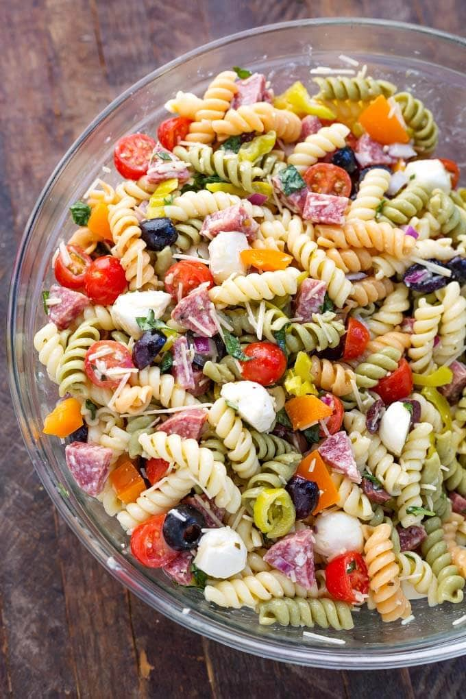

Italian Pasta Salad

Description
Enjoy a creamy classic that's easily customizable with your favorite
veggies. Ripe olives, Italian dressing, and Cheddar cheese combine
for a forkful of tangy, satisfying flavor. This is perfect for a buffet
or barbeque.
Ingredients
- 8 ounces of roelle or spiral pasta, cooked and drained
- 2 1/2 cups of assorted cut-up vegetables (broccoli, carrots, tomatoes, bell peppers,
cauliflower, onions and mushrooms)
- 1/2 cup cubed Cheddar or mozzarella cheese
- 1/3 cup of sliced pitted ripe olives (optional)
- 1 cup of Wish-Bone Italian Dressing
Steps
- Combine all ingredients except Wish-Bone Dressing in a large bowl
- Add dressing
- Toss all ingredients well
- Serve chilled or at room temperature